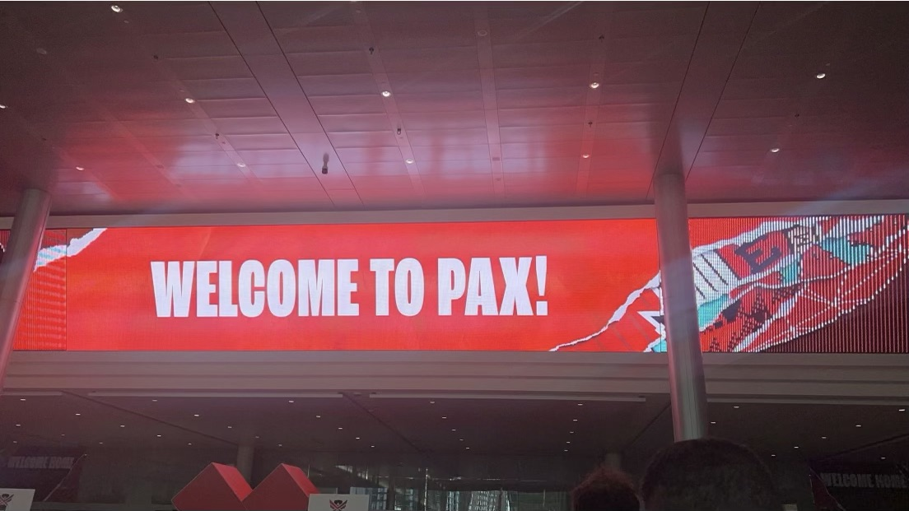

Pax East
This year I was lucky enough to get to attend pax east a gaming convention as part of an up and coming social media team. With this amazing opportunity I was able to experience a different side of the gaming industry all of which led me to this capstone project where I decided to look at how gaming companies from indy to AAA used social media to market their games and products. As well I'm going to walk you through the creative process of our social media team creating content for Heavy Play, a company in their first year of business in the collectible trading card game industry.
